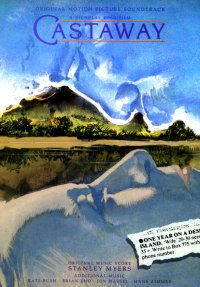
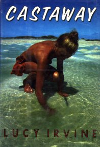

(These lyrics were originally from Andrew Marvick's
The Garden.)
 Misc page
Misc page
This
Woman's Work page
Album/Era
Alphabetical
Gaffaweb
"Be Kind to My Mistakes"
Castaway film soundtrack
Written by Kate Bush


The album (Castaway soundtrack) is no longer in print. The version of BKTMM
found elsewhere (This Woman's Work Box Set, Aspects of The Sensual World) is a
different and shortened version. If you ever see the Castaway soundtrack, as LP
or cassette (it was never released on CD)... SNATCH IT UP!!!!
- It is this that brings us together.
- It is this that brings us together.
- It's all right, darling,
- We can do this together.
- It's all right, darling,
- I can think of nothing better.
- I don't know you,
- And you don't know me:
- It is this that brings us together.
- It is this that brings us together.
- It is this that brings us together.
- I don't know what you are
- (It is this that brings us together.)
- Looking for in me.
- I don't know what I want,
- (It is this that brings us together.)
- But my heart is needing.
-
- Am I yours? Are you mine?
- We'll find all we're meant to find.
- In your life, in my life,
- There are secrets too dark
- To let out, to let go of,
- To get over.
- But that's all right, baby.
- That's all right by me.
- It's all right now.
- (Just let me say)
- Please, ("Yea, yo, yea, yo!")
- Please, ("Yea, yo, yea, yo!")
- Please, ("Yea, yo, yea, yo!")
- Please be kind
- To my mistakes.
- Be kind,
- Be kind
- To me.
-
- "Lum, lum, lum...
- Lum, lum...Lum, lum..."
©1989 Novercia Ltd.
This Woman's Work page
{kind=link}
{kind=link}
{kind=link}